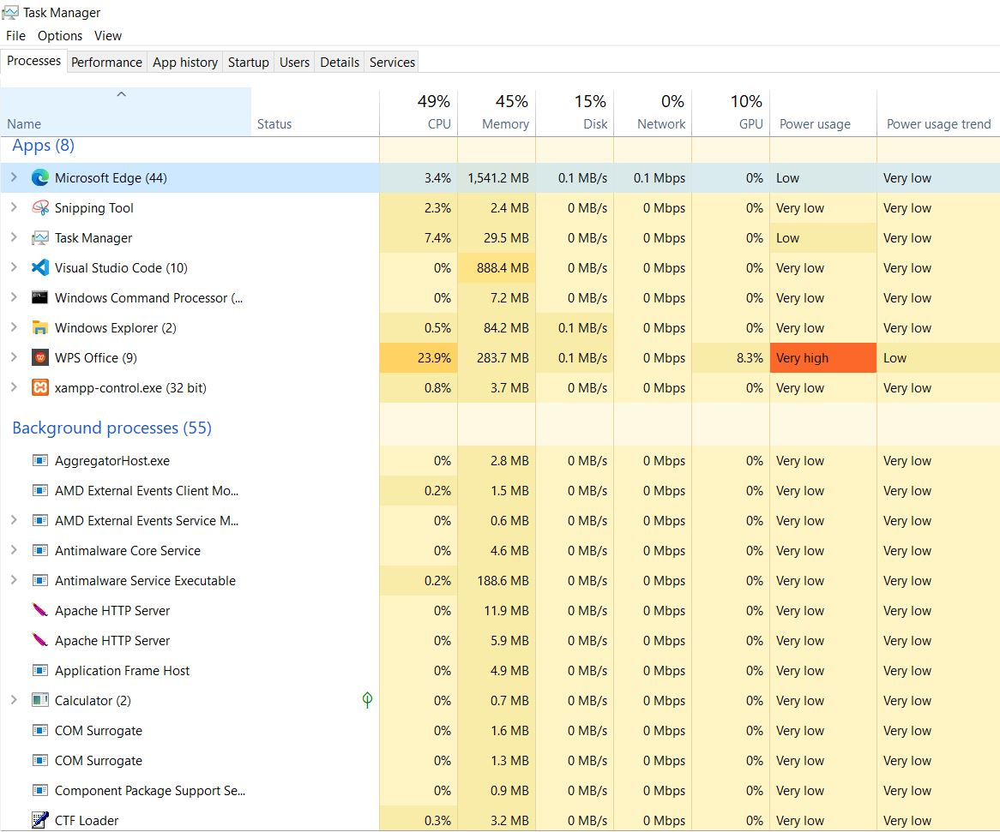

Basic PC Troubleshooting
PC Troubleshooting Guide
Smart Hands technicians are often called upon to perform basic PC troubleshooting under remote guidance. This includes identifying and resolving issues related to hardware connections, power, display output, network connectivity, and peripheral functionality. Technicians should be able to follow structured instructions, verify cabling and device status, and provide clear documentation of all findings. While not expected to perform deep software diagnostics, Smart Hands support plays a critical role in confirming physical integrity and performing initial triage to assist remote engineers in rapid fault isolation.
-
Basic PC Troubleshooting
-
Power Supply Diagnostic Checks
-
BIOS / Startup Diagnostic Checks
-
Hardware Diagnostic Checks
-
Using the Task Manager
-
Using the Command Line
Power Supply Diagnostic Checks
BIOS / Startup Diagnostic Checks
Hardware Diagnostic Checks
Using the Task Manager
When troubleshooting a Windows PC that is not running as expected, always begin by using the Task Manager, which is a built-in utility that displays programs, processes and system activity running on a PC while offering some managerial control regarding APP usage. Hold Ctrl + Shift + ESC to access Task Manager. You can also right-click the task bar or press WIN key + X, and select it from the menu. By default, the task manager opens in simple view, but you can click the more details module to expand results. Once there, you can select the tab that suits your troubleshooting criteria.
-
Core Processes-tab Concepts
CPUPercentage of available processor capacity currently in use. A high sustained percent means the process is occupying significant compute time.MemoryWorking set of RAM the process holds. High memory use reduces free RAM and forces paging if demand exceeds physical memory.DiskI/O activity (reads/writes). High sustained disk activity or long I/O queues cause slow application response and system-wide lag.NetworkBytes per second being sent/received by the process. Unexpected network traffic can indicate background updates, syncs, or malicious activity.GPUGPU engine and VRAM consumption for compute tasks. High GPU use affects rendering-heavy applications and hardware-accelerated operations.Process StateRunning, Suspended, Not Responding — indicates if the process is actively scheduled, paused for power savings, or unresponsive.
Core Concepts of the Task Manager
-
The CPU measures the percentage of available processor capacity currently in use. Issues occur whenever there is a high sustained percent that is occupying significant compute time.
- Metric Origin:> Measured as the percentage of active execution cycles versus available cycles in the CPU clock schedule.
- Logical vs Physical Cores: Task Manager distinguishes logical processors (via hyper-threading) but aggregates in the main graph unless split view is enabled.
- Base Speed vs Current Speed: Shows nominal clock frequency versus actual real-time frequency after dynamic scaling (Intel SpeedStep, AMD Cool'n'Quiet).
- Uptime: Tracks the continuous run time since last system boot -key for diagnosing hangs versus fresh-start problems.
- Handles / Threads / Processes: Counts objects in use by the OS; spikes can indicate runaway software or leaks.
-
The Memory targets the working set of RAM a process holds. High memory use reduces free RAM and forces paging if demand exceeds physical memory.
- Physical Memory Usage: Represents allocated RAM pages versus total available capacity.
- Committed Memory: Sum of RAM in use and virtual memory reserved in the pagefile -if committed memory exceeds physical RAM, paging will occur.
- Cached Memory: Pages kept in RAM for quick reuse, available to be freed if needed.
- Hardware Reserved: Portion of memory mapped for device firmware (e.g., GPU VRAM mapping).
- Page Faults: When required data is not in RAM and must be loaded from storage -visible indirectly through spikes in disk usage during low RAM conditions.
-
The Disk reads/writes I/O activity. High sustained disk activity or long I/O queues cause slow application response and system-wide lag.
- Activity Measurement: Reports read/write requests per second and transfer rates, derived from the storage driver queue.
- Active Time (%): Reflects how busy the storage device is servicing I/O requests -high active time with low throughput indicates latency.
- Response Time (ms): Average delay per read/write -spikes here can indicate mechanical HDD delay, SSD wear, or driver issues.
- Disk Queue Length: Shows backlog of pending I/O -persistent high queues indicate a bottleneck.
-
The Network demonstrates bytes per second being sent/received by the process. Unexpected network traffic can indicate background updates, syncs, or malicious activity.
- Throughput: Measured in Mbps (megabits per second) for send and receive directions.
- Link Speed: Physical connection speed negotiated with the network adapter (e.g., 1 Gbps).
- Utilization (%): Current bandwidth usage compared to maximum link speed.
- Packets Sent/Received: Useful for identifying packet loss patterns or network saturation.
-
The GPU highlights the GPU engine and VRAM consumption for compute tasks. High GPU use affects rendering-heavy applications and hardware-accelerated operations.
- Workload Types: Split into 3D rendering, video encode/decode, and compute workloads.
- Dedicated vs Shared Memory: VRAM (dedicated) versus RAM borrowed for graphics tasks (shared).
- Temperature and Clock Speeds: May be displayed depending on driver support -critical for thermal diagnostics.
- Engine Usage Graphs: Separate timelines for each GPU engine type to pinpoint which workload is driving GPU load.
The Processes-tab
The Processes tab shows every running program and background task and the real-time resources each consumes. Its role is simple: identify which applications or background processes are consuming the most CPU, memory, disk, network, or GPU so you can locate the source of a performance problem. Utilize this tab when you want to end an unresponsive application and manage resource usage. You can sort columns to quickly pinpoint consistently high usage then right-click unresponsive applications to close them. You would also look here for suspicious processes with unfamiliar names, which may indicate malware or unwanted software.

Using the Processes-tab
-
Open the Task Manager:
Ctrl + Shift + ESC. -
Sort by Resource:
- Sort by CPU if system is slow.
- Sort by Memory if APPs are lagging.
- Sort by Disk if file operations are slow.
- Sort by Network if Internet activity is slow.
-
Identify the APP that Consumes the MOST and Notate:
- Process Name
- User
- Process Type
- PID
-
Heuristics & Safe Thresholds:
- CPU: sustained > 70-80% indicates a bottleneck that needs action.
- Memory: free RAM below ~15-20% signals memory exhaustion.
- Disk: sustained near 100% active time or long queue lengths indicates I/O bottleneck.
- Network: unexpected continuous upload/download requires investigation.
- Field Challenge: Open TM, click 'Processes' and sort by CPU => Open web browser with multiple tabs and watch CPU % rise => Then close browser and observe CPS drop.
The Performance-tab
The Performance tab displays real-time telemetry of system hardware activity and is generally used to observe and confirm CPU, memory, disk and network usage. It uses resource graphs to visually identify spikes or sustained high loads to quickly ascertain where is the bottleneck why the system is slow.
 Using the PERFORMANCE-tab
Using the PERFORMANCE-tab
Ctrl + Shift + ESC.
The StartUp-tab
abc
abc

The Details-tab